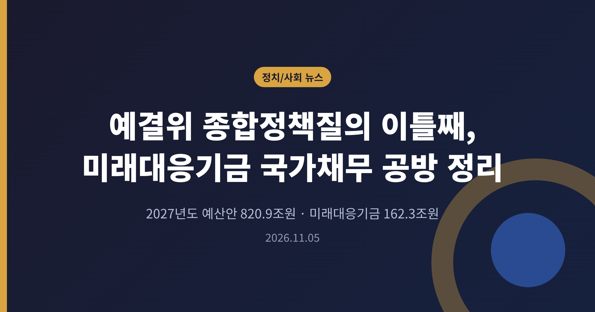
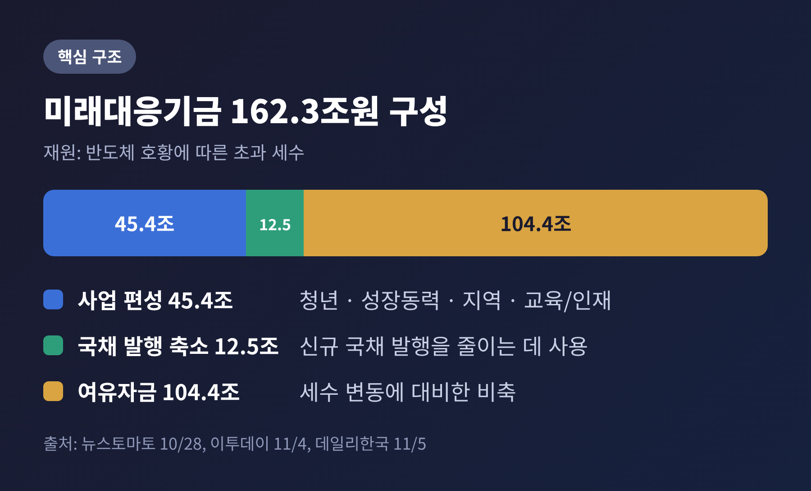
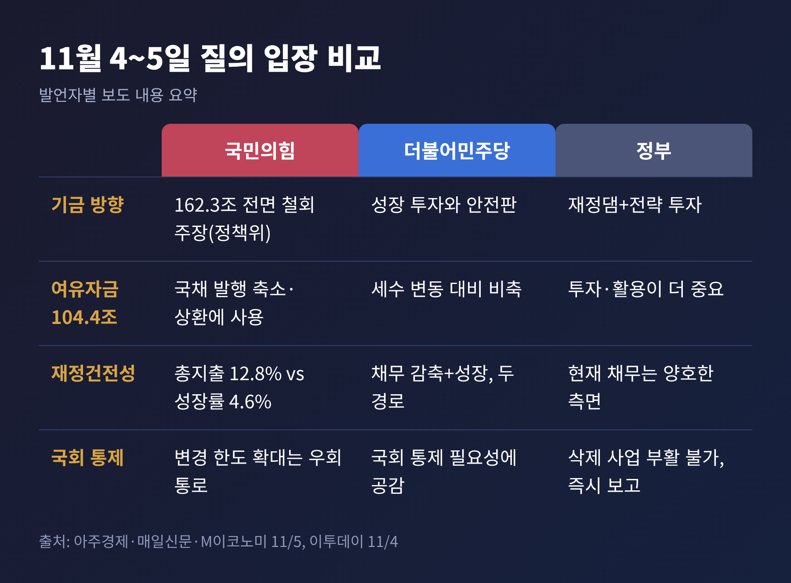
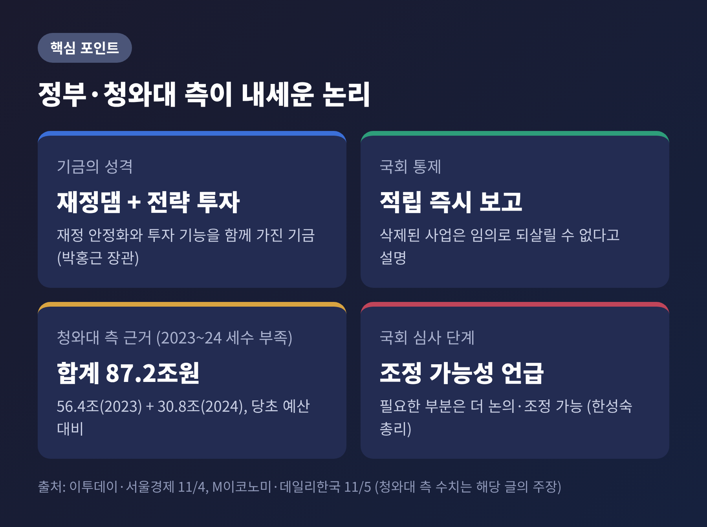
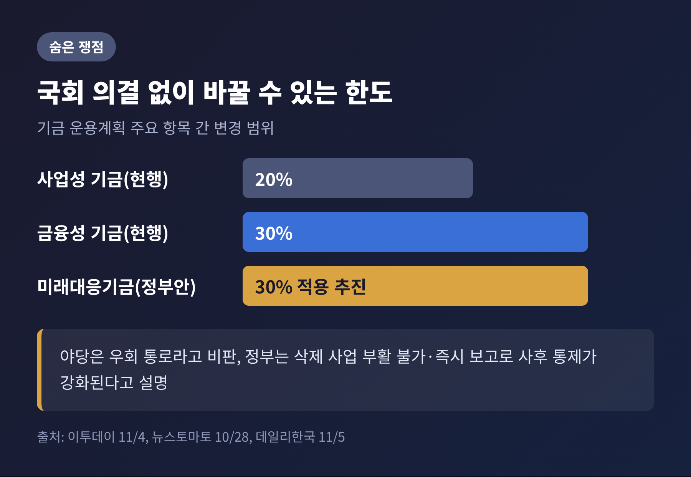
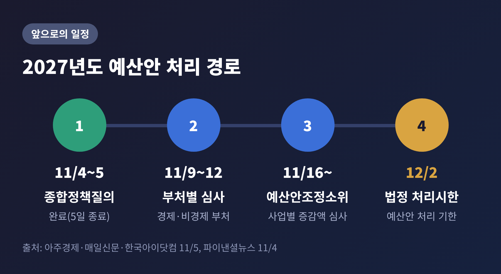

3줄 요약
이번 글에서는 5일 예결위 종합정책질의 2일차에서 오간 미래대응기금 공방을 정리해 보겠습니다. 이날 새로 나온 논점은 국가채무와 총지출 증가율, 국민의힘의 전액 철회안, 국회 예산심의권 문제 세 가지입니다. 여야 양측 주장과 정부 답변을 같은 비중으로 옮기겠습니다.
국회 예산결산특별위원회는 5일 오전 10시 전체회의를 열었습니다. 2027년도 예산안 종합정책질의의 둘째 날이자 마지막 날이었습니다. 한성숙 국무총리와 이형일 부총리 겸 재정경제부 장관이 출석해 답변할 예정이었고, 박홍근 기획예산처 장관이 주요 질의에 답한 것으로 보도됐습니다.
심의 대상은 820조9천억원 규모의 내년도 예산안입니다. 역대 최대 규모입니다. 올해 본예산 727.9조원과 비교하면 93조원이 늘었고, 지출 증가율은 12.8%로 보도됐습니다.
논의의 중심에는 미래대응기금이 있었습니다. 반도체 호황에 따른 초과 세수로 조성하는 기금으로, 규모는 162조3천억원입니다. 구성은 세 갈래입니다.

사업 편성분 45.4조원은 청년, 성장동력, 지역, 교육·인재 분야에 쓰입니다. 12.5조원은 신규 국채 발행을 줄이는 데 쓰이고, 나머지 104.4조원은 세수 변동에 대비한 여유자금으로 쌓입니다. 정치권 공방의 상당 부분은 이 마지막 104.4조원을 어떻게 볼 것인가에 모였습니다.
예산안의 법정 처리시한은 12월 2일입니다. 종합정책질의는 그 첫 관문에 해당합니다. 여기서 정리된 입장 차이가 이후 부별심사와 조정소위의 증감액 협상으로 이어집니다.
기금의 성격 자체도 쟁점입니다. 호황기에 걷힌 세금을 빚 갚기에 먼저 쓸지, 미래 투자와 안전판으로 둘지는 재정 철학의 문제이기도 합니다. 규모가 커서 어느 쪽이든 국가채무와 이자 부담, 지방재정에 미치는 영향이 작지 않습니다.
송언석 의원은 내년 총지출 증가율 12.8%가 성장률 4.6%의 약 3배라고 짚었습니다. 재정을 지나치게 빠르게 쓰고 있다는 문제 제기였습니다. 한쪽에서는 100조원 넘게 채무를 늘리고 다른 쪽에서는 100조원 넘는 여유자금을 쌓는 것이 맞느냐고 물었습니다. 기금의 기능은 기존 공공자금관리기금으로도 가능하다는 주장도 덧붙였습니다.
엄태영 의원은 이재명 정부 5년간 국가채무가 453조원 늘어날 것이라는 전망을 인용했습니다. 2029년 이후 추가 세수가 없을 것이라는 전문가 전망을 들어, 세수가 줄면 교부세 보전용 국채 발행이 늘 수 있다고 우려했습니다.
국민의힘 정책위원회는 구체안도 내놓았습니다. 기금 162조3천억원 전면 철회, 사업분 45.4조원의 일반·특별회계 및 기금 환원, 여유자금 104.4조원의 국채 발행 축소 활용입니다. 정책위는 전액 삭감 시 국가채무가 116조9천억원 줄고 연간 이자가 약 3조원 절감된다고 추산했습니다. 이 추산은 정책위 자체 계산이며, 정부나 제3의 기관이 검증한 수치는 확인되지 않았습니다.

이연희 의원은 재정건전성을 높이는 길을 두 가지로 나눴습니다. 채무를 줄이는 방법, 그리고 성장으로 채무를 감당할 능력을 키우는 방법입니다. 미래대응기금은 이 둘을 동시에 추진하는 장치라고 설명했습니다. 미래 세대는 빚만 물려받는 것이 아니라 첨단산업 같은 경제 기반도 물려받으므로, 성장 투자를 하지 않으면 그것이 오히려 부담이 된다는 논리입니다.
전은수 원내대변인은 기금을 미래 성장 준비, 국가부채의 적정 관리, 향후 재정 축소에 대비한 안전판으로 규정했습니다. 전날에는 안도걸 의원이 세수 변동성 대비 비축이라는 취지를 밝혔고, 이건태 의원은 채무 상환에만 쓰는 것을 마라톤 도중에 쉬는 것에 빗댔습니다.
박홍근 장관은 통상적 지출과 이례적 수입의 관리는 별개의 문제라고 답했습니다. 현재 국가채무 상황은 양호한 측면이 있으므로 지금은 투자와 활용이 더 중요하다는 취지였습니다. 기금의 수익률에 대해서는 공식 목표 운용수익률을 제시한 바 없다고 설명했습니다.
전날 답변도 함께 볼 필요가 있습니다. 박 장관은 국회가 삭제한 사업을 임의로 되살릴 수 없고, 초과세수를 기금에 적립하면 즉시 국회에 보고하므로 사후 통제가 오히려 강화된다고 밝혔습니다. 한 총리는 초과세수 규모가 역대 최대 수준이어서 세수 변동에 대비해야 한다고 했고, 국회 심사 단계에서 필요한 부분은 더 논의하고 조정할 수 있다는 입장도 내놓았습니다.
청와대 측에서도 반응이 나왔습니다. 류덕현 씨는 페이스북 글에서 '쌈짓돈' 비판에 반박했습니다. 국세수입이 당초 예산보다 2023년 56.4조원, 2024년 30.8조원, 합계 87.2조원 부족했던 사례를 들며 여유 재원의 필요성을 강조했습니다. 이 수치는 해당 글의 주장을 보도한 기사 기준이며, 야당의 직접 반론은 확인하지 못했습니다.

숫자 못지않게 무게가 실린 논점이 있습니다. 기금 운용계획을 국회 의결 없이 바꿀 수 있는 한도입니다. 현행법상 사업성 기금은 20%, 금융성 기금은 30%입니다. 정부는 미래대응기금에 30%를 적용하는 방안을 추진하고 있습니다. 국민의힘은 이를 국회 통제를 피하는 통로라고 비판했고, 나경원 의원은 전날 "총선용 사금고"라는 표현을 썼습니다.
예결위 수석전문위원의 검토보고서도 비슷한 우려를 담았다고 보도됐습니다. 내국세를 적게 전망하면 국회 심의 없이 기금 수입이 늘 수 있고, 운용계획을 바꿔 지출에 쓸 수 있어 예산심의권이 무력화될 수 있다는 내용입니다. 다만 이 보도는 한 매체 기준이며 보고서 원문은 확인하지 못했습니다.
흥미로운 점은 지방교부세에서 여야가 겹친다는 사실입니다. 기금 세입으로 잡힌 지방교부세 30.5조원 가운데 기금의 지방계정 지출은 15.3조원이라는 지적이 있었고, 여야 모두 교부세 감소 우려에는 공감했습니다. 전날 민주당 김교흥 의원은 저축 논리는 수긍하되 교부세 배분을 늘리자는 취지로 말했습니다.

종합질의는 끝났고, 이제 숫자를 다투는 단계입니다. 9일부터 12일까지 부처별 심사가 진행됩니다. 16일부터는 예산안조정소위원회에서 사업별 증액과 감액을 가립니다. 법정 시한은 12월 2일입니다.
변수는 세 가지입니다. 첫째, 국민의힘이 요구하는 전액 철회와 27조원 감액이 어디까지 협상 테이블에 오르느냐입니다. 둘째, 변경 한도 30% 적용과 같은 제도 부분을 국회가 그대로 받을지, 조정할지입니다. 한 총리가 조정 가능성을 열어둔 만큼 이 지점이 절충 후보로 보입니다. 셋째, 지방교부세 배분입니다. 여야가 모두 우려를 밝힌 만큼 합의 여지가 가장 큰 항목일 수 있으나, 이는 어디까지나 관전 포인트입니다.

정리하면 이렇습니다. 이틀간의 질의에서 양측이 확인한 것은 합의가 아니라 기준의 차이였습니다. 한쪽은 빚을 줄이는 것을 재정 건전성으로 보고, 다른 쪽은 성장 투자로 채무를 감당할 힘을 키우는 것을 건전성으로 봅니다.
"기금의 규모보다, 누가 언제 어떻게 쓰는지를 국회가 얼마나 볼 수 있느냐."
이번 심사에서 마지막까지 남을 질문은 이것일 가능성이 큽니다. 숫자를 보실 때는 총액 162.3조원이 아니라 사업, 국채 축소, 여유자금으로 나누어 확인해 보시길 권합니다.